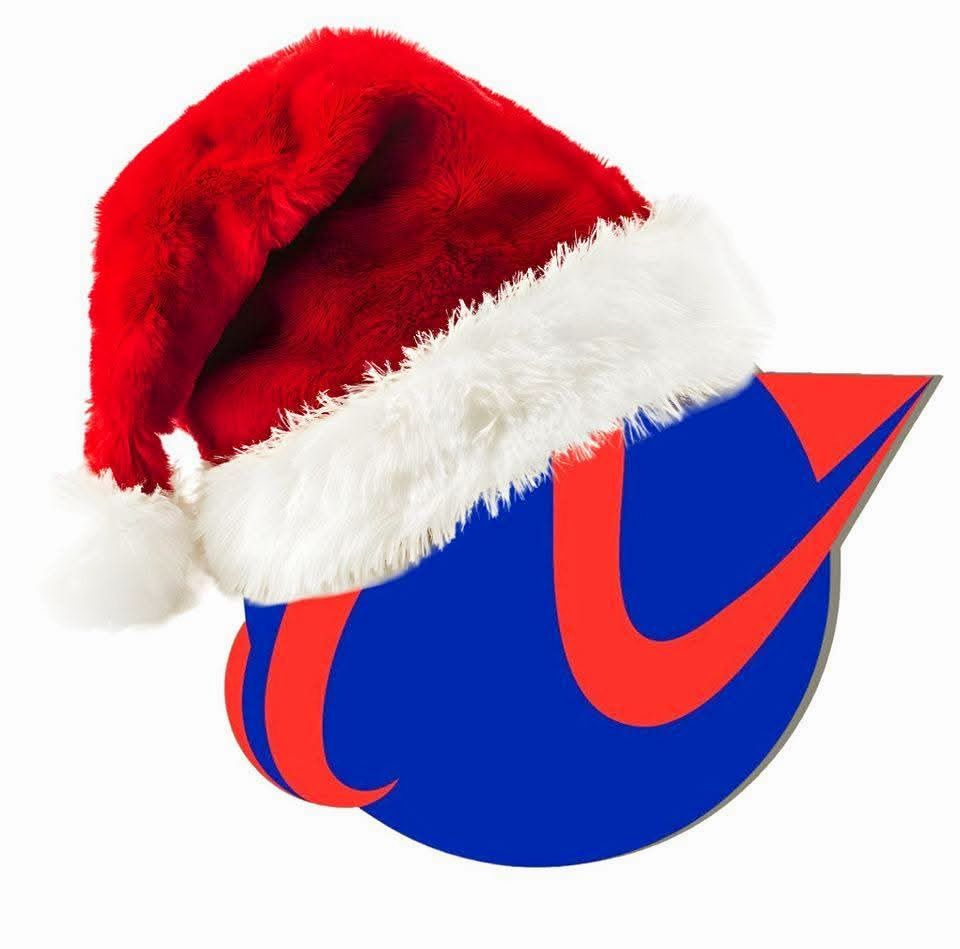

L'instant Santé
La plateforme chaleureuse et moderne pour guider la jeunesse au quotidien.

🌟 Lire c'est la vie
Bienvenue sur L'instant Santé, ton ami au quotidien. Conçu pour la jeunesse par Neema Digit SAS, ce portail part d'une conviction : lire, c'est la vie. Dans un monde où l'information défile à toute vitesse, prendre le temps de lire des contenus structurés est un acte de liberté et de protection de soi, un rempart contre les rumeurs et les fausses pistes sanitaires.
Nous t'accompagnons, sans jugement, dans la compréhension de ton corps et la prévention des maux du quotidien : stress des examens, sommeil face aux écrans, alimentation, protection de la vision. Notre but : t'aider à devenir l'acteur principal de ta propre santé.
🚀 Ce que tu trouveras ici
- Une encyclopédie de maux détaillés, avec de petits scripts Python à lire et à copier.
- « On dit Que ? » : les mythes et remèdes de grand-mère passés au crible.
- Une page Urgences avec les bons réflexes.
- 10 fiches pratiques à demander sur WhatsApp.
- Un quiz interactif avec tirage aléatoire des questions.
🔍 Recherche (maux & symptômes)
Le tueur silencieux
L'hypertension artérielle est une élévation durable de la pression du sang dans les artères, à partir de 140/90 mmHg. Longtemps vue comme une maladie de personnes âgées, elle touche de plus en plus de jeunes adultes : sédentarité, aliments très salés ou ultratransformés, stress.
Mécanisme et risques
Quand les artères perdent leur souplesse ou se rétrécissent, le cœur doit forcer pour maintenir le débit. À la longue, le muscle cardiaque s'épaissit et les parois des vaisseaux s'abîment. Les facteurs favorisants : hérédité, surpoids, excès de sel et de bouillons cubes, tabac, sédentarité, anxiété chronique. Non contrôlée, l'HTA augmente le risque d'AVC, d'infarctus, d'insuffisance rénale et de lésions de la rétine.
Script Python : analyser une mesure
# Analyse d'une mesure de tension – L'instant Santé
def analyser_tension(sys, dias):
if sys < 120 and dias < 80:
return "Tension normale. Continue ainsi !"
elif 120 <= sys <= 139 or 80 <= dias <= 89:
return "Pré-hypertension : surveille le sel et bouge plus."
else:
return "Valeur élevée : refais la mesure au repos et consulte un médecin."
print(analyser_tension(135, 85))Une seule mesure ne suffit pas à poser un diagnostic.
Prévention
Réduis le sel, privilégie les aliments frais riches en potassium (légumes verts, bananes, agrumes), marche au moins 30 minutes par jour, arrête le tabac, apprends à gérer le stress et fais contrôler ta tension régulièrement.
L'épidémie silencieuse du sucre
Le diabète de type 2 perturbe la façon dont le corps transforme les aliments en énergie. L'insuline, produite par le pancréas, permet au sucre de pénétrer dans les cellules. Dans le diabète de type 2, les cellules y résistent de plus en plus et le pancréas s'épuise à compenser.
Facteurs déclenchants
Boissons sucrées, sodas, farines raffinées et produits ultratransformés sollicitent le pancréas en permanence. La sédentarité aggrave le problème : des muscles peu sollicités répondent moins bien à l'insuline.
Script Python : calculer l'IMC
# Calcul de l'IMC – L'instant Santé
def calculer_imc(poids_kg, taille_m):
imc = poids_kg / (taille_m ** 2)
if imc < 18.5:
statut = "Insuffisance pondérale"
elif imc < 25:
statut = "Corpulence normale"
elif imc < 30:
statut = "Surpoids"
else:
statut = "Obésité (consultation conseillée)"
return f"IMC : {imc:.2f} – {statut}"
print(calculer_imc(70, 1.75))Vers un équilibre durable
Le diabète de type 2 est en grande partie évitable. Privilégie les fibres, les céréales complètes, les protéines de qualité, réduis les sucres libres et bouge régulièrement : le corps retrouve alors une meilleure sensibilité à l'insuline.
Les yeux face au numérique
Smartphones, tablettes et ordinateurs sollicitent nos yeux en continu. Fatigue visuelle, sécheresse oculaire et myopie touchent de plus en plus de jeunes.
Lumière bleue et sécheresse
Devant un écran, on cligne beaucoup moins des yeux (environ 4 à 5 fois par minute au lieu de 15 à 20). Le film de larmes se renouvelle mal : rougeurs, brûlures, vision floue passagère. La lumière bleue des écrans le soir peut aussi perturber le sommeil.
La règle 20-20-20
Toutes les 20 minutes d'écran, regarde un objet situé à environ 6 mètres pendant 20 secondes. Ajuste la luminosité à la pièce, fais des pauses sans écran et, si besoin, utilise des larmes artificielles.
🚨 Urgences & Secours
Les bons réflexes en attendant les secours.
Police
Sapeurs-pompiers
Au téléphone : garde ton calme, donne le lieu exact, décris la situation et réponds aux questions avant de raccrocher.
Refroidis sous l'eau tempérée (environ 15 °C), en jet doux, pendant au moins 10 minutes. Retire les bijoux et les vêtements non collés à la peau. Couvre avec un linge propre. Ne mets ni huile, ni beurre, ni dentifrice. Appelle les secours si la brûlure est étendue, au visage ou touche un enfant.
Appuie directement sur la plaie avec un linge propre, sans relâcher. Allonge la personne. Appelle les secours.
Mets-la sur le côté (Position Latérale de Sécurité), surveille sa respiration, appelle les secours. Ne lui donne rien à boire.
Visage affaissé, bras sans force, parole difficile : appelle immédiatement les secours et note l'heure d'apparition des signes.
Ces fiches ne remplacent pas une formation. La Croix-Rouge burkinabè forme aux premiers secours.
🩺 Encyclopédie & Maux Détaillés
Les dossiers HTA, diabète et santé oculaire sont sur la page d'accueil.
Ce qu'il faut savoir
Le paludisme est transmis par la piqûre d'un moustique, l'anophèle, qui pique surtout la nuit. Signes fréquents : fièvre, frissons, maux de tête, courbatures. Chez un jeune enfant ou une femme enceinte, une fièvre demande une consultation rapide.
Que faire
- Consulte un centre de santé en cas de fièvre : un test de dépistage confirme ou non la maladie.
- Ne prends pas de médicaments au hasard : le traitement est prescrit après le test.
Prévenir
- Dors sous une moustiquaire imprégnée, en bon état.
- Vide régulièrement les eaux stagnantes autour de la maison (pneus, seaux, canaris).
- Porte des vêtements couvrants le soir.
💡 On dit Que ? (Mythes & Croyances)
Les fausses idées reçues et les remèdes populaires dangereux.

C'est l'un des remèdes de grand-mère les plus répandus et l'un des plus nocifs. Les corps gras emprisonnent la chaleur et aggravent la brûlure en profondeur. Le dentifrice contient des abrasifs, du menthol et des antiseptiques qui irritent la peau lésée et favorisent l'infection.
Le bon réflexe : placer la zone brûlée sous un jet d'eau tempérée (environ 15 °C, jamais glacée), en continu, pendant au moins 10 minutes. Cela refroidit les tissus, limite la lésion et soulage la douleur.
Instiller du citron, du vinaigre ou un liquide non stérile dans l'œil est très dangereux et peut mener à la cécité. La cornée est un tissu fragile et sensible au pH. Le jus de citron (pH proche de 2) provoque une brûlure chimique, des ulcères et des opacités. Les décoctions maison contiennent des particules et des germes qui peuvent causer des infections graves.
Pour nettoyer les yeux, utilise uniquement du sérum physiologique stérile ou des larmes artificielles, avec l'avis d'un professionnel si l'œil est rouge ou douloureux.
Les protocoles actuels utilisent des molécules à action courte, administrées et surveillées en continu par un médecin anesthésiste-réanimateur. Chez un adulte en bonne santé, les produits sont éliminés en quelques heures et ne laissent, dans la grande majorité des cas, aucune séquelle à long terme. Une confusion passagère reste possible, surtout chez les personnes âgées.
L'anesthésie ne détruit pas les souvenirs et ne réduit pas l'intelligence. Aucun acte médical n'est sans risque : parles-en à l'anesthésiste avant l'intervention.
Bibliothèque de Fichiers (10 Fiches)
Demande la fiche de ton choix directement sur WhatsApp.
🎈 Grand Quiz Santé & Prévention 🎈
20 questions tirées au hasard à chaque partie.
✨ Bienvenue sur le Quiz !
Entre ton prénom pour commencer :
🎉 Fin de la partie, - !
Neema Digit SAS
Ingénierie digitale & solutions web • Ouagadougou, Burkina Faso
Ouedraogo Aboubacar (Mr BOW 226)
Entrepreneur, développeur et artiste, fondateur de Neema Digit SAS depuis 2022. Il pilote la technologie, le design et le développement de l'agence, et a conçu le portail L'instant Santé.
💼 Présentation
Fondée en 2022 à Ouagadougou, Neema Digit SAS conçoit des sites web, des identités visuelles et des solutions e-commerce. Sa mission : créer des plateformes simples, rapides et utiles, qui répondent aux besoins de la jeunesse, de la santé publique et des entreprises.
L'instant Santé illustre cette approche : utiliser le code et un design soigné pour rendre l'information de santé accessible et lutter contre la désinformation.
🚀 Modèle économique
Deux axes : le développement de sites et de solutions e-commerce sur mesure pour des clients, et l'édition de plateformes d'utilité publique comme L'instant Santé, avec des fiches pratiques proposées via WhatsApp, des partenariats et des espaces publicitaires ciblés.